[4-2] OLED显示屏 — 学习笔记
一句话结论
4 针 I2C 屏接 PB8/PB9，把 OLED.c、OLED.h、OLED_Font.h 加进 Hardware 组，只改引脚配置与 OLED_I2C_Init 两处；再用 8 个显示函数显示字符、字符串、数字和进制。后半段是 Keil 调试模式：单步、断点、变量观察、外设寄存器实时查看。
本集定位
- 纯代码课，基于 [3-4] 的「按键控制LED」工程复制改名，把 [4-1] 的 OLED 驱动模块用起来。
- 后半段完整介绍 Keil 调试模式，为后面复杂程序排错做准备。
- 本集的 OLED 显示会在 [5-2] 两个中断程序里继续用。
0. 接线与现象
- OLED 固定在面包板右下角，以后一直插这里。
- GND → 负极供电孔、VCC → 正极供电孔（3.3V）；SCL → PB8、SDA → PB9。
- 下方两个供电孔还连到 STM32 的 PB6、PB7：不初始化这两个引脚，上电默认浮空输入、不输出电平，没有影响；也可用 GPIO 供电（PB6 输出低、PB7 输出高），但不规范，实际项目仍用电源。
现象：OLED 依次显示字符 A、字符串 HelloWorld!、数字 12345、有符号数 -66、十六进制 AA55、二进制 1010101001010101，最后调用 OLED_Clear() 清屏。
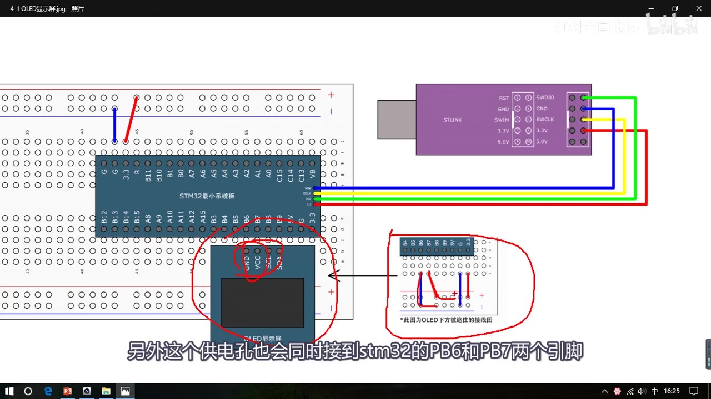
图 1：接线图——OLED 插在面包板右下角，4 针 GND/VCC/SCL/SDA
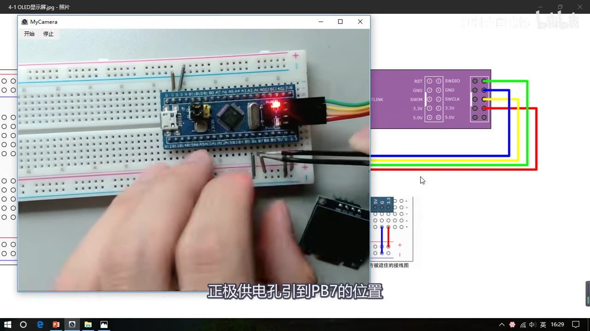
图 2：面包板插线——电源引到 PB6/PB7，OLED 插到 PB6～PB9
1. 搭工程、加入驱动模块
- 复制 [3-4] 的「按键控制LED」工程，改名
4-1 OLED显示屏，删掉 main.c 原代码、关掉多余标签页； - 源码目录有 4 针 I2C 版和 7 针 SPI 版，本课用 4 针版；
- 把 4 针版的
OLED.c、OLED.h、OLED_Font.h复制到工程的Hardware文件夹； - Keil 里 Hardware 组右键 → Add Existing Files，选这 3 个文件加入工程。
三个文件：
OLED.c：函数主体——引脚配置、引脚初始化、I2C 基本时序、显示函数；OLED.h：外部可调用函数的声明；OLED_Font.h：字库点阵数据，不用改。OLED 不带字库，显示字符必须先有点阵数据。
只需要改两处：
- 引脚配置：
SCL、SDA接哪个端口就改成哪个，默认SCL = GPIOB / GPIO_Pin_8、SDA = GPIOB / GPIO_Pin_9，换端口两行都要改； OLED_I2C_Init：用 RCC 开所用 GPIO 的时钟，把 SCL、SDA 初始化为开漏输出（GPIO_Mode_Out_OD），并分别初始化 Pin_8、Pin_9。
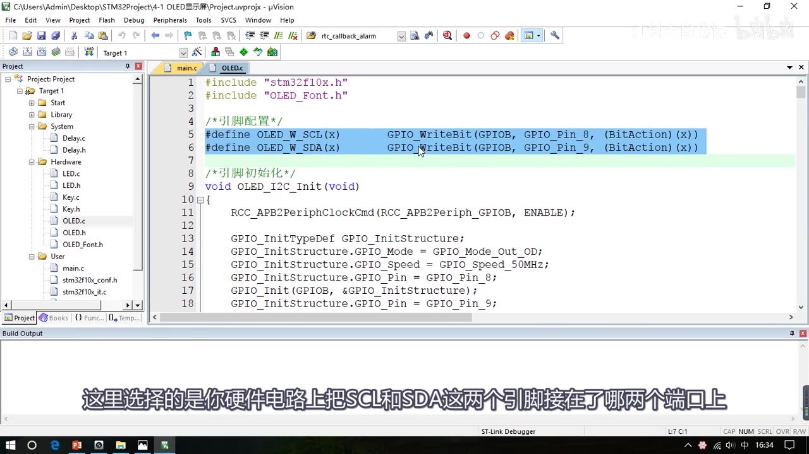
图 3：OLED.c 引脚配置——SCL/SDA 默认 GPIOB 的 Pin_8 / Pin_9
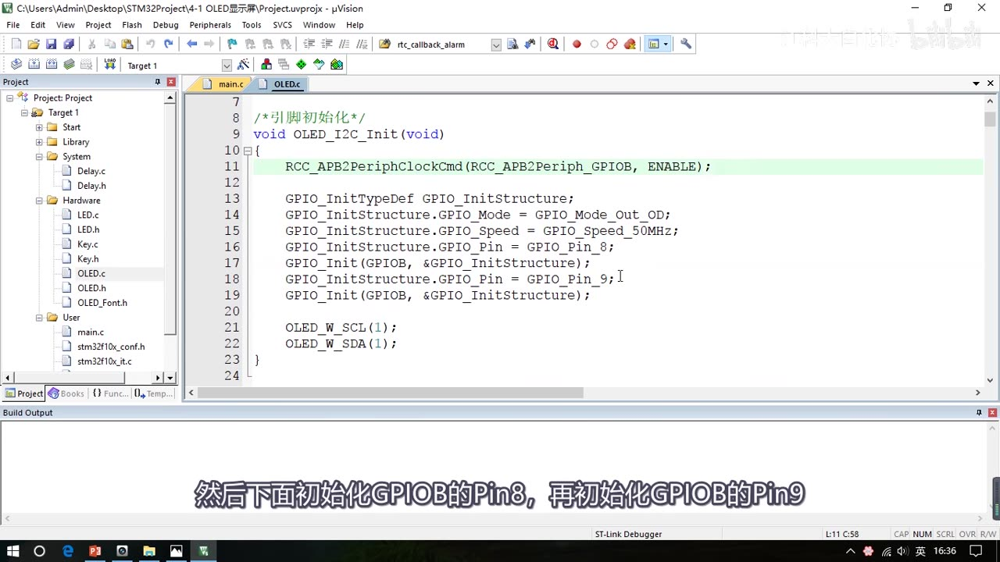
图 4：OLED_I2C_Init——开 GPIOB 时钟，Pin_8/Pin_9 设为开漏输出（Out_OD）
2. 用显示函数
main.c 里 #include "OLED.h"，主循环前调用 OLED_Init()，之后就能用各显示函数：
| 函数 | 作用 | 示例 | 现象 |
|---|---|---|---|
OLED_Init() |
初始化 | 使用前必须调用 | 屏幕准备好 |
OLED_Clear() |
清屏 | 最后调用 | 屏幕全空 |
OLED_ShowChar(行, 列, 字符) |
显示一个字符（单引号） | OLED_ShowChar(1, 1, 'A') |
1 行 1 列显示 A |
OLED_ShowString(行, 列, 字符串) |
显示字符串（双引号） | OLED_ShowString(1, 3, "HelloWorld!") |
1 行 3 列开始显示 HelloWorld! |
OLED_ShowNum(行, 列, 数字, 长度) |
显示无符号十进制数 | OLED_ShowNum(2, 1, 12345, 5) |
2 行 1 列显示 12345 |
OLED_ShowSignedNum(行, 列, 数字, 长度) |
显示有符号十进制数（带正负号） | OLED_ShowSignedNum(2, 7, -66, 2) |
显示 -66 |
OLED_ShowHexNum(行, 列, 数字, 长度) |
显示十六进制 | OLED_ShowHexNum(3, 1, 0xAA55, 4) |
显示 AA55 |
OLED_ShowBinNum(行, 列, 数字, 长度) |
显示二进制 | OLED_ShowBinNum(4, 1, 0xAA55, 16) |
显示 1010101001010101 |
- 坐标 4 行 × 16 列，行/列都从 1 开始。
- 长度参数（
ShowNum等）：比数字位数大则前面补 0（12345 给 6 → 012345）；比数字位数小则切掉高位（给 4 → 2345）。 - 显示前先算好坐标 + 长度，别超出屏幕。
- C 语言不能直接写二进制数，
ShowBinNum的入参用十六进制（如 0xAA55），函数内部再按二进制显示。 - 只清部分字符：在对应位置
ShowString显示空格即可。
主函数示例（依次显示六种内容，最后清屏）：
#include "stm32f10x.h"
#include "Delay.h"
#include "OLED.h"
int main(void)
{
OLED_Init();
OLED_ShowChar(1, 1, 'A');
OLED_ShowString(1, 3, "HelloWorld!");
OLED_ShowNum(2, 1, 12345, 5);
OLED_ShowSignedNum(2, 7, -66, 2);
OLED_ShowHexNum(3, 1, 0xAA55, 4);
OLED_ShowBinNum(4, 1, 0xAA55, 16);
OLED_Clear();
while (1)
{
}
}
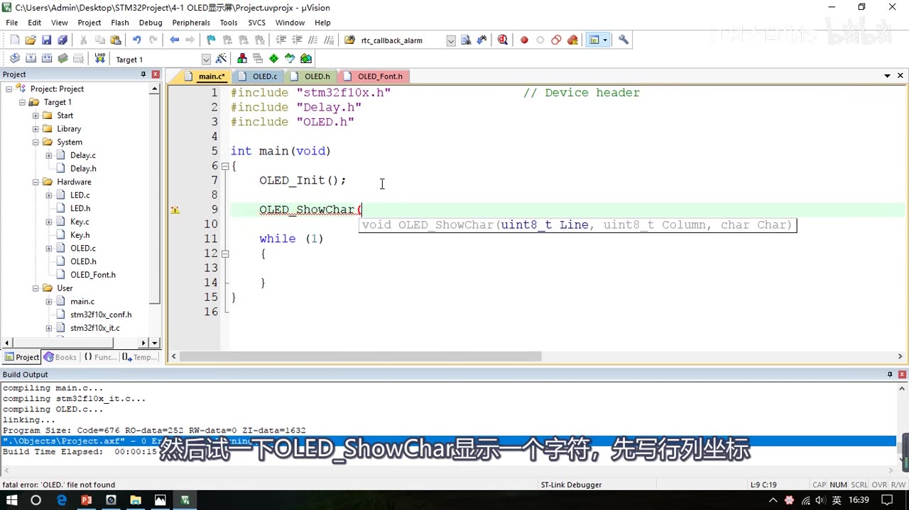
图 5：main.c——先调用 OLED_Init()，再调用显示函数
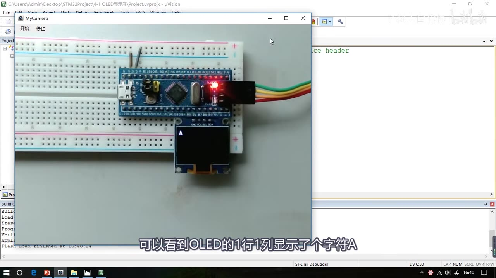
图 6：OLED_ShowChar(1,1,'A') 现象——1 行 1 列显示字符 A
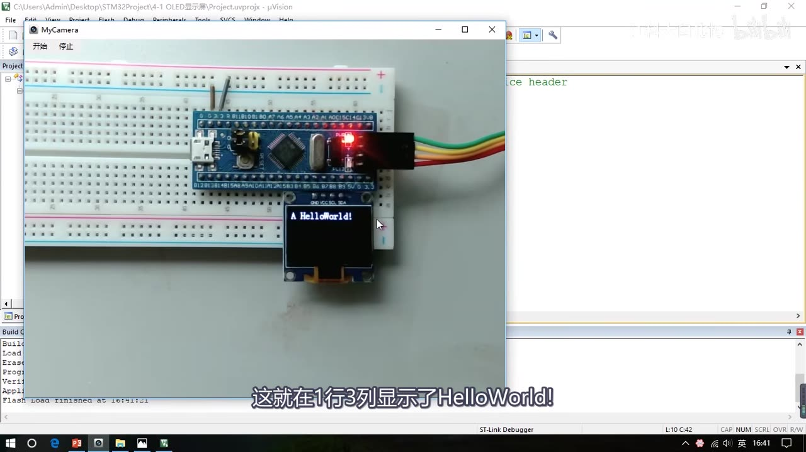
图 7：OLED_ShowString(1,3,"HelloWorld!") 现象——1 行 3 列起显示
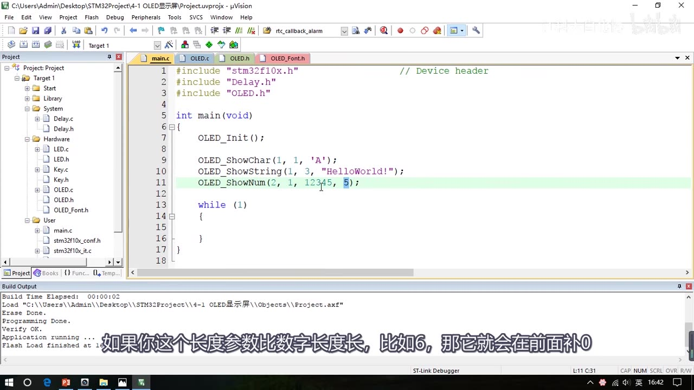
图 8：OLED_ShowNum 长度参数——比数字长补 0、短则切掉高位
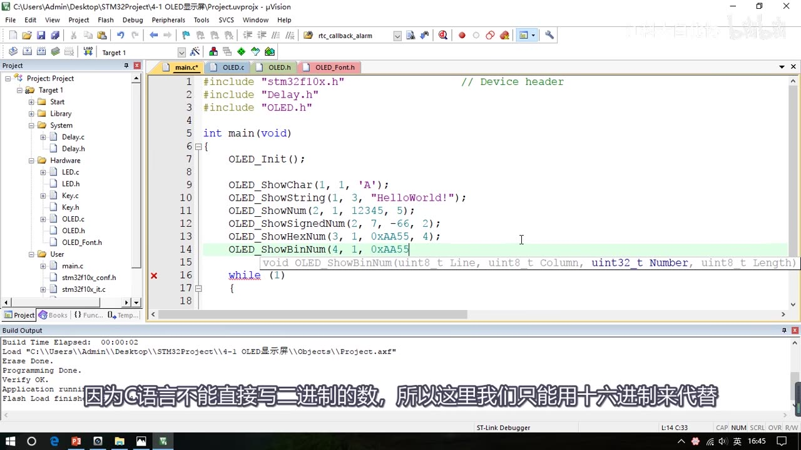
图 9：OLED_ShowBinNum(4,1,0xAA55,16)——用十六进制代替二进制字面量
3. Keil 调试模式
3.1 配置与进入
- 工程选项 → Debug 页：默认右侧硬件在线仿真（要 ST-Link 和 STM32 都连好）；也可选左侧仿真器用电脑模拟 STM32，不接硬件。
- 先编译，再点工具栏放大镜带 d 的图标进入调试。
3.2 调试界面
- 主窗口：C 语言程序，黄色箭头指向下一条要执行的代码；上方是翻译出的汇编程序；
- 左侧：寄存器组和状态标志位（汇编编程才关注，用 C 语言可以不管）；
- 下方/右下：Call Stack & Locals（调用栈和局部变量）。
3.3 运行控制
- 复位回到程序开头；全速运行与停止；单步运行、跳过当前行、跳出当前函数、运行到光标指定行。
- 断点：在代码左侧深灰色区域点击设置，全速运行会一直跑到断点处停下；没有断点就只能手动点停止。
- 复位后从启动文件的复位中断函数开始，先跳
SystemInit再执行main。
3.4 变量与寄存器观察
- 符号窗口可看程序里的所有变量：展开
GPIO_InitStructure可看各成员；右键加到 Watch1 实时观察，单步能看到值变化。 - 还有串口、逻辑分析仪等工具（视频未逐一演示）。
- 外设菜单 → 系统资源查看：选 GPIOA 就显示它的全部寄存器；程序翻转 PA0 时，ODR 寄存器的 ODR0 位实时变化，面包板上 PA0 的 LED 同步闪烁——在线调试时 STM32 实时执行、Keil 实时显示外设寄存器。
3.5 注意事项
- 调试模式下不能直接修改程序：要改程序必须先退出调试模式 → 重新编译 → 再进入调试。
- 更多功能查 Keil 官方帮助文档（Help → 第一项）。
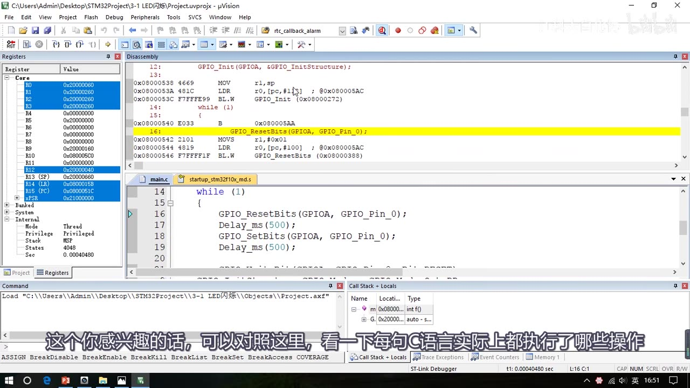
图 10：Keil 调试界面——左侧寄存器组、上方反汇编、下方 C 代码与调用栈
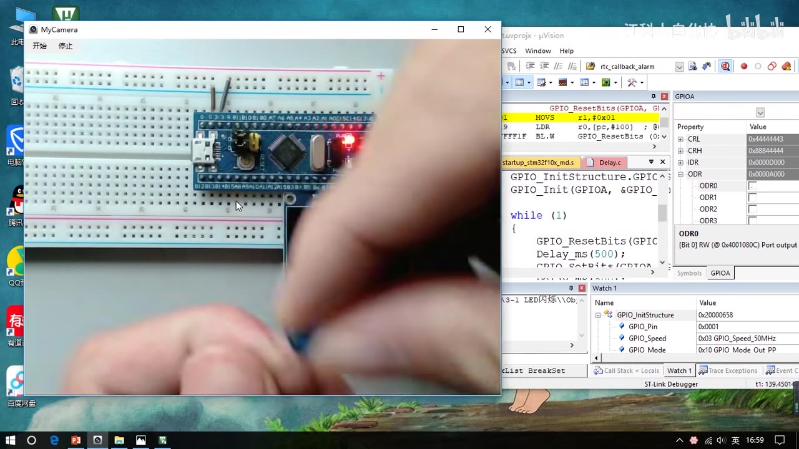
图 11：Watch1 看结构体成员，GPIOA 的 ODR0 随程序实时变化
4. 坑与易错点
- 先
OLED_Init()再显示，否则屏幕不亮。 - 改引脚要改两处：OLED.c 顶部的
OLED_W_SCL/OLED_W_SDA宏和OLED_I2C_Init里的时钟/引脚初始化，只改一处会不显示。 - SCL/SDA 必须初始化为开漏输出（
GPIO_Mode_Out_OD），这是 GPIO 模拟 I2C 的必要条件。 - 字符用单引号、字符串用双引号；坐标 4 行×16 列，别越界。
- 长度参数要算好：比数字长补 0、比数字短则丢掉高位，不是完整显示。
- C 语言不能直接写二进制字面量，用十六进制代替。
- OLED 不带字库：
OLED_Font.h必须复制进工程，否则字符显示不出来。 - PB6/PB7 不要配置成输出：它们借给 OLED 当供电孔，默认浮空输入不输出电平。
- 部分清屏用
ShowString显示空格即可，不必OLED_Clear。 - Keil 调试模式不能边调边改代码：改完要退出调试、重新编译再进。